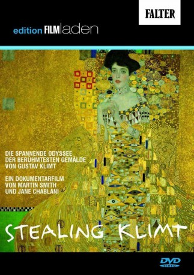

#2131 Stealing Klimt
 
 IMDB-Wertung: 7.2 / 10
IMDB-Wertung: 7.2 / 10  Metascore: 0
Metascore: 0 
Stealing Klimt recounts the struggle by 90-year-old Maria Altmann to recover five Gustav Klimt paintings stolen from her family by the Nazis in Vienna. From the end of the War up until last year, these paintings hung in the Austrian National Gallery. The film covers Maria's early life in glittering fin-de-siècle Vienna, her dramatic escape from Nazi terror and her courageous fight to recover the five Klimt's against all the odds. Maria's fight to reclaim the paintings eventually took her to the United States Supreme Court and pitted her not just against Austria but also against the US Government which asked the Supreme Court to reject her case. After Maria finally emerged victorious in 2006, one of the paintings - the "Golden Portrait" of Maria's aunt, Adele Bloch Bauer - was sold to cosmetics tycoon Ronald Lauder for $135m, becoming the world's most expensive painting ever sold. The other four paintings were recently auctioned at Christie's for record prices.
Jahr: 2007
Dauer: 88 Minuten
FSK: 0
Land: England Studio: Stardust FilmverleihTonspuren:
Untertitel:
Auflösung: SD (608x336) Größe: 699 MB
Genre: Dokumentation
Regisseur: Jane Chablani
Drehbuch: Martin Smith
Soundtrack: Chris Elliott
Darsteller:
 Adolf Hitler als Himself , archive footage
Adolf Hitler als Himself , archive footage- Maria Altmann als Herself
- Michael J. Bazyler als Himself
- Hubertus Czernin als Himself
- Gerbert Frodl als Himself , archive footage
- Elisabeth Gehrer als Herself , archive footage
- Joseph Goebbels als Himself , archive footage
- Willi Korte als Himself
- Sophie Lillie als Herself
- Jonathan Petropoulos als Himself
- E. Randol Schoenberg als Himself
- Arthur Seyss-Inquart als Himself , archive footage
- Monica Strauss als Herself
- Gottfried Toman als Himself
- Kurt Waldheim als Himself , archive footage
- Tina Walzer als Herself
Datei: X:\Dokumentationen\Biografie\Stealing Klimt (2007, FSK0, 608x336).avi seit 07.10.2015
Festplatte: HD Serien(SU-Z)+Dokus+Musik
 Es gibt insgesamt 21 Filme in der Gruppe 'Dokumentationen\Biografie'
Es gibt insgesamt 21 Filme in der Gruppe 'Dokumentationen\Biografie'